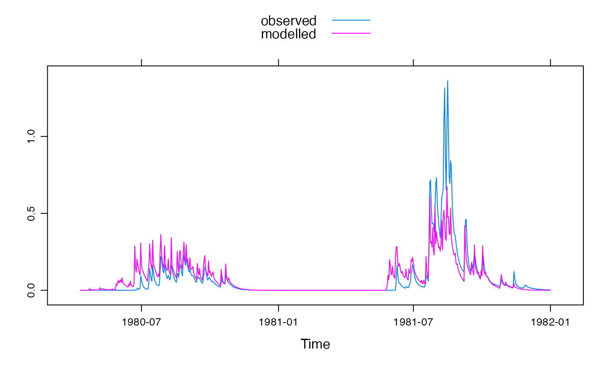

The hydromad function can be used to specify models with their model
equations, data, parameters and settings. It allows a general two-component
structure, where the Soil Moisture Accounting (sma) component and the
Routing (routing) component can be arbitrary functions. A method can
be specified for fitting the dependent routing component.
hydromad( DATA = zoo(), ..., sma = hydromad.getOption("sma"), routing = hydromad.getOption("routing"), rfit = NULL, warmup = hydromad.getOption("warmup") )
| DATA | a
|
|---|---|
| ... | values or ranges for named parameters. Any parameters not given
here will be taken from defaults given in |
| sma | name of the Soil Moisture Accounting (SMA) component. May be
|
| routing | name of the routing component (i.e. the component which takes
in effective rainfall from |
| rfit | optional specification for fitting the routing component. If a
character string is given, then a corresponding function
routing |
| warmup | warmup period in number of time steps. |
the result from hydromad() is a
hydromad object.
The hydromad() function allows models to be specified with the given
component models and parameter specifications. The resulting object can
later be modified using the update.hydromad method
using the same syntax.
Methods for working with the model objects are listed under
hydromad.object.
For a tutorial, type vignette("tutorial", package = "hydromad").
For an overview of the package, see the paper
vignette("hydromad_paper").
For a list of the package functions with their help pages, see the website http://hydromad.catchment.org/.
F.T. Andrews, B.F.W. Croke and A.J. Jakeman (2011). An open software environment for hydrological model assessment and development. Environmental Modelling and Software 26 (2011), pp. 1171-1185. http://dx.doi.org/10.1016/j.envsoft.2011.04.006
hydromad.object
Felix Andrews felix@nfrac.org
data(Cotter) x <- Cotter[1:1000] ## IHACRES CWI model with exponential unit hydrograph ## an unfitted model, with ranges of possible parameter values modx <- hydromad(x, sma = "cwi", routing = "expuh", tau_s = c(2, 100), v_s = c(0, 1) ) modx#> #> Hydromad model with "cwi" SMA and "expuh" routing: #> Start = 1966-05-01, End = 1969-01-24 #> #> SMA Parameters: #> lower upper #> tw 0 100 #> f 0 8 #> scale NA NA #> l 0 0 (==) #> p 1 1 (==) #> t_ref 20 20 (==) #> Routing Parameters: #> lower upper #> tau_s 2 100 #> v_s 0 1#> #> Hydromad model with "cwi" SMA and "expuh" routing: #> Start = 1966-05-01, End = 1969-01-24 #> #> SMA Parameters: #> tw f scale l p t_ref #> 100.00000 4.82739 0.00129 0.00000 1.00000 20.00000 #> Routing Parameters: #> tau_s v_s #> 25.2354 0.9253 #> TF Structure: single store + instantaneous in parallel #> Poles:0.9611 #> #> Fit: ($fit.result) #> fitByOptim(MODEL = modx) #> 163 function evaluations in 8.679 seconds#> #> Call: #> hydromad(DATA = x, tau_s = 25.2354, v_s = 0.925311, sma = "cwi", #> routing = "expuh", tw = 100, f = 4.82739, scale = 0.00129012) #> #> Time steps: 900 (0 missing). #> Runoff ratio (Q/P): (0.7028 / 2.285) = 0.3075 #> rel bias: -7.108e-17 #> r squared: 0.7134 #> r sq sqrt: 0.8295 #> r sq log: 0.8429 #> #> For definitions see ?hydromad.stats #>## IHACRES CWI model with extra parameter l ## Fixed UH (fit once) by inverse method ## an unfitted model, with ranges of possible parameter values mod0 <- hydromad(x, sma = "cwi", l = c(0, 100), routing = "armax", rfit = list("inverse", order = c(1, 1)) )#> Warning: reached maximum number of iterationsmod0#> #> Hydromad model with "cwi" SMA and "armax" routing: #> Start = 1980-01-01, End = 1982-01-01 #> #> SMA Parameters: #> lower upper #> tw 0 100 #> f 0 8 #> scale NA NA #> l 0 100 #> p 1 1 (==) #> t_ref 20 20 (==) #> Routing Parameters: #> a_1 b_0 b_1 delay #> 0.8873 0.2665 -0.1538 1.0000 #> TF Structure: single store + instantaneous in parallel #> Poles:0.8873 #> #> Routing fit info: list(TRUE, 1)#> #> Hydromad model with "cwi" SMA and "armax" routing: #> Start = 1980-01-01, End = 1982-01-01 #> #> SMA Parameters: #> tw f scale l p t_ref #> 1.654e-02 8.000e+00 9.960e-05 1.000e+02 1.000e+00 2.000e+01 #> Routing Parameters: #> a_1 b_0 b_1 delay #> 0.8873 0.2665 -0.1538 1.0000 #> TF Structure: single store + instantaneous in parallel #> Poles:0.8873 #> #> Fit: ($fit.result) #> fitByOptim(MODEL = mod0) #> 289 function evaluations in 6.266 seconds #> #> Routing fit info: list(TRUE, 1)#> #> Call: #> hydromad(DATA = x, l = 100, sma = "cwi", routing = "armax", rfit = list("inverse", #> order = c(1, 1)), tw = 0.0165399, f = 8, scale = 9.96021e-05) #> #> Time steps: 632 (0 missing). #> Runoff ratio (Q/P): (0.07337 / 3.252) = 0.02256 #> rel bias: -1.704e-06 #> r squared: 0.6568 #> r sq sqrt: 0.7325 #> r sq log: 0.6938 #> #> For definitions see ?hydromad.stats #>xyplot(fit1)